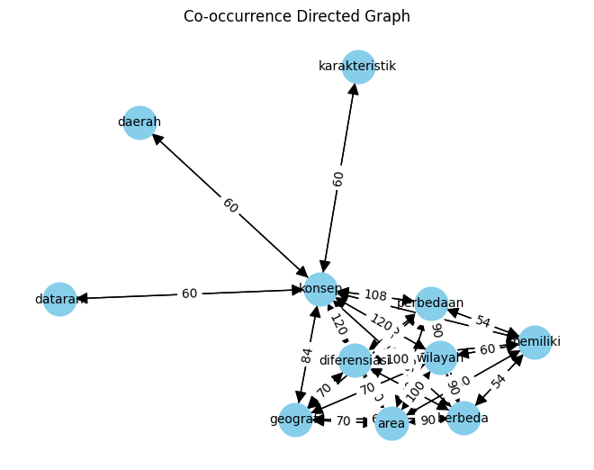

Page Rank#
import pandas as pd
import numpy as np
df = pd.read_csv('/content/drive/MyDrive/PPW/Tugas/processing_DataDetik.csv')
df.isnull().sum()
Unnamed: 0 0
Judul 0
Artikel 0
Category 0
dtype: int64
df.dropna(inplace=True)
df = df.drop_duplicates(subset=['Judul', 'Artikel'])
df
| Unnamed: 0 | Judul | Artikel | Category | |
|---|---|---|---|---|
| 0 | 0 | Pengertian Konsep Diferensiasi Area Geografi d... | Gejala dan permasalahan geografi di setiap dae... | Edu |
| 1 | 1 | Mahasiswa FT UI Juara 1 Balap Mobil Nasional d... | Berprestasi tak harus di bidang akademik. Sepe... | Edu |
| 2 | 2 | Keren! Robot Tangan Ini Mirip Seperti Organ Ma... | Ilmuwan telah memanfaatkan printing 3D untuk m... | Edu |
| 3 | 3 | Mengapa Makam Mesir Kuno Ini Diberi Mantra Pel... | Selama penggalian di Abusir, antara Giza dan S... | Edu |
| 4 | 4 | Cara Menyelamatkan Diri Saat Kapal Tenggelam, ... | Ketika sedang berada di kapal di laut, tentuny... | Edu |
| ... | ... | ... | ... | ... |
| 1718 | 1718 | 5 Bintang Sepakbola Top Dunia Ini Ternyata Dul... | Banyak pemain sepakbola top dunia ternyata men... | Sport |
| 1719 | 1719 | Ducati Enggak Takut Rahasianya Akan Dibawa Mar... | Marc Marquez diyakini akan menyeberang ke Gres... | Sport |
| 1720 | 1720 | 16 Poin Evaluasi PBSI Usai Gagal di Asian Game... | PP PBSI melakukan evaluasi menyusul kegagalan ... | Sport |
| 1721 | 1721 | Penggemar Ducati Indonesia Antusias Jumpa Bagn... | Ketua MPR RI sekaligus Ketua Umum Ikatan Motor... | Sport |
| 1722 | 1722 | Miguel Oliveira Calon Pengganti Marc Marquez d... | Miguel Oliveira dilaporkan menjadi kandidat pe... | Sport |
1723 rows × 4 columns
import re, string
# Text Cleaning
def cleaning(text):
# Menghapus tag HTML
text = re.compile('<.*?>|&([a-z0-9]+|#[0-9]{1,6}|#x[0-9a-f]{1,6});').sub('', str(text))
# Mengubah seluruh teks menjadi huruf kecil
text = text.lower()
# Menghapus spasi pada teks
text = text.strip()
# Menghapus Tanda Baca, karakter spesial, and spasi ganda
text = re.compile('<.*?>').sub('', text)
text = re.compile('[%s]' % re.escape(string.punctuation)).sub(' ', text)
text = re.sub('\s+', ' ', text)
text = re.sub("â½ïgoal", "", text)
text = re.sub("SCROLL TO CONTINUE WITH CONTENT", "", text)
text = re.sub(r'[^a-zA-Z\s]', '', text)
# Menghapus Nomor
text = re.sub(r'\[[0-9]*\]', ' ', text)
text = re.sub(r'[^\w\s]', '', str(text).lower().strip())
text = re.sub(r'\d', ' ', text)
text = re.sub(r'\s+', ' ', text)
# Mengubah text yang berisi 'nan' dengan whitespace agar nantinya dapat dihapus
text = re.sub('nan', '', text)
return text
df['Artikel'] = df['Artikel'].apply(lambda x: cleaning(x))
import nltk
from nltk.tokenize import word_tokenize
nltk.download('popular')
[nltk_data] Downloading collection 'popular'
[nltk_data] |
[nltk_data] | Downloading package cmudict to /root/nltk_data...
[nltk_data] | Package cmudict is already up-to-date!
[nltk_data] | Downloading package gazetteers to /root/nltk_data...
[nltk_data] | Package gazetteers is already up-to-date!
[nltk_data] | Downloading package genesis to /root/nltk_data...
[nltk_data] | Package genesis is already up-to-date!
[nltk_data] | Downloading package gutenberg to /root/nltk_data...
[nltk_data] | Package gutenberg is already up-to-date!
[nltk_data] | Downloading package inaugural to /root/nltk_data...
[nltk_data] | Package inaugural is already up-to-date!
[nltk_data] | Downloading package movie_reviews to
[nltk_data] | /root/nltk_data...
[nltk_data] | Package movie_reviews is already up-to-date!
[nltk_data] | Downloading package names to /root/nltk_data...
[nltk_data] | Package names is already up-to-date!
[nltk_data] | Downloading package shakespeare to /root/nltk_data...
[nltk_data] | Package shakespeare is already up-to-date!
[nltk_data] | Downloading package stopwords to /root/nltk_data...
[nltk_data] | Package stopwords is already up-to-date!
[nltk_data] | Downloading package treebank to /root/nltk_data...
[nltk_data] | Package treebank is already up-to-date!
[nltk_data] | Downloading package twitter_samples to
[nltk_data] | /root/nltk_data...
[nltk_data] | Package twitter_samples is already up-to-date!
[nltk_data] | Downloading package omw to /root/nltk_data...
[nltk_data] | Package omw is already up-to-date!
[nltk_data] | Downloading package omw-1.4 to /root/nltk_data...
[nltk_data] | Package omw-1.4 is already up-to-date!
[nltk_data] | Downloading package wordnet to /root/nltk_data...
[nltk_data] | Package wordnet is already up-to-date!
[nltk_data] | Downloading package wordnet2021 to /root/nltk_data...
[nltk_data] | Package wordnet2021 is already up-to-date!
[nltk_data] | Downloading package wordnet31 to /root/nltk_data...
[nltk_data] | Package wordnet31 is already up-to-date!
[nltk_data] | Downloading package wordnet_ic to /root/nltk_data...
[nltk_data] | Package wordnet_ic is already up-to-date!
[nltk_data] | Downloading package words to /root/nltk_data...
[nltk_data] | Package words is already up-to-date!
[nltk_data] | Downloading package maxent_ne_chunker to
[nltk_data] | /root/nltk_data...
[nltk_data] | Package maxent_ne_chunker is already up-to-date!
[nltk_data] | Downloading package punkt to /root/nltk_data...
[nltk_data] | Package punkt is already up-to-date!
[nltk_data] | Downloading package snowball_data to
[nltk_data] | /root/nltk_data...
[nltk_data] | Package snowball_data is already up-to-date!
[nltk_data] | Downloading package averaged_perceptron_tagger to
[nltk_data] | /root/nltk_data...
[nltk_data] | Package averaged_perceptron_tagger is already up-
[nltk_data] | to-date!
[nltk_data] |
[nltk_data] Done downloading collection popular
True
df['isi_tokens'] = df['Artikel'].apply(lambda x: word_tokenize(x))
df[["Artikel", "isi_tokens"]].head()
| Artikel | isi_tokens | |
|---|---|---|
| 0 | gejala dan permasalahan geografi di setiap dae... | [gejala, dan, permasalahan, geografi, di, seti... |
| 1 | berprestasi tak harus di bidang akademik seper... | [berprestasi, tak, harus, di, bidang, akademik... |
| 2 | ilmuwan telah memanfaatkan printing d untuk me... | [ilmuwan, telah, memanfaatkan, printing, d, un... |
| 3 | selama penggalian di abusir antara giza dan sa... | [selama, penggalian, di, abusir, antara, giza,... |
| 4 | ketika sedang berada di kapal di laut tentunya... | [ketika, sedang, berada, di, kapal, di, laut, ... |
nltk.download('stopwords')
[nltk_data] Downloading package stopwords to /root/nltk_data...
[nltk_data] Package stopwords is already up-to-date!
True
from nltk.corpus import stopwords
from itertools import chain
stop_words = set(chain(stopwords.words('indonesian')))
df['isi_tokens'] = df['isi_tokens'].apply(lambda x: [w for w in x if not w in stop_words])
df['Artikel'] = df['isi_tokens'].apply(lambda tokens: ' '.join(tokens))
df.head()
| Unnamed: 0 | Judul | Artikel | Category | isi_tokens | |
|---|---|---|---|---|---|
| 0 | 0 | Pengertian Konsep Diferensiasi Area Geografi d... | gejala permasalahan geografi daerah berbeda be... | Edu | [gejala, permasalahan, geografi, daerah, berbe... |
| 1 | 1 | Mahasiswa FT UI Juara 1 Balap Mobil Nasional d... | berprestasi bidang akademik muhammad aqsha auf... | Edu | [berprestasi, bidang, akademik, muhammad, aqsh... |
| 2 | 2 | Keren! Robot Tangan Ini Mirip Seperti Organ Ma... | ilmuwan memanfaatkan printing d robot tangan f... | Edu | [ilmuwan, memanfaatkan, printing, d, robot, ta... |
| 3 | 3 | Mengapa Makam Mesir Kuno Ini Diberi Mantra Pel... | penggalian abusir giza saqqara arkeolog czech ... | Edu | [penggalian, abusir, giza, saqqara, arkeolog, ... |
| 4 | 4 | Cara Menyelamatkan Diri Saat Kapal Tenggelam, ... | kapal laut mengharapkan kondisi kapal tenggela... | Edu | [kapal, laut, mengharapkan, kondisi, kapal, te... |
df['Artikel'][0]
'gejala permasalahan geografi daerah berbeda beda daerah memiliki faktor ciri khasnya wilayah cocok ditanami vegetasi ditanami vegetasi perbedaan wilayah ilmu geografi dikaji salah konsep dasar konsep diferensiasi area konsep dasar ilmu geografi lokasi jarak morfologi keterjangkauan pola aglomerasi nilai kegunaan interdependensi keterkaitan ruang diferensiasi area scroll to continue with content kesempatan kali mari membahas konsep diferensiasi area beserta contohnya yuk simak artikel konsep diferensiasi area mengemukakan fenomena muka bumi memiliki perbedaan ciri khas dikutip buku explore geografi jilid sma ma kelas x karya dra sri wiyanti mpd dkk konsep diferensiasi area berhubungan perbedaan fenomena wilayah pengertian konsep diferensiasi area merujuk keunikan karakteristik wilayah dibandingkan wilayah mengutip e modul pembelajaran sma geografi kelas x karya fitri sekar lestari diferensiasi area konsep membandingkan wilayah karakteristik khasnya konsep diferensiasi area mempertegas memiliki perbedaan kondisi fisik sumber daya alam sumber daya manusianya gejala permasalahan geografis tersebar ruang memiliki karakteristik berbeda beda konsep mencakup pemahaman mendalam faktor faktor geografis sosial ekonomi ciri khas identitas unik daerah menganalisis perbedaan ahli geografi mengeksplorasi dinamika spasial temporal mengidentifikasi pola pola membentuk keberagaman wilayah berdasarkan penjelasan contoh konsep diferensiasi area ruang lingkup geografi jenis ikan dibudidayakan air tawar berbeda jenis ikan air payau permasalahan permasalahan perkotaan sejenis kota alternatif pemecahan berbeda sesuai karakteristik keruangannya jenis tanaman dibudidayakan dataran berbeda jenis dataran rendah teh cocok dataran jagung dataran rendah komoditas utama dihasilkan masyarakat pedesaan hasil pertanian dihasilkan daerah perkotaan barang industri masyarakat daerah pegunungan cenderung pakaian tebal berbeda masyarakat tinggal pesisir pantai pakaian tipis wilayah karst bentuk kenampakan lahan berbeda kawasan karst gunung sewu memiliki satuan bentuk lahan kerucut kawasan raja ampat memiliki satuan lahan menara karst kondisi biosfer berbeda beda bioma gurun tundra taiga sabana hutan hujan tropis menyebabkan perbedaan flora fauna tinggal bioma perbedaan topografi relief wilayah menimbulkan kenampakan alam berbeda beda pegunungan lembah dataran rendah menciptakan perbedaan distribusi sumber daya alam penjelasan konsep diferensiasi area menekankan perbedaan karakteristik wilayah'
from sklearn.feature_extraction.text import CountVectorizer
vectorizer = CountVectorizer(tokenizer=lambda x: x.split())
X = vectorizer.fit_transform([df['Artikel'][0]])
co_occurrence_matrix = (X.T * X)
co_occurrence_matrix.setdiag(0)
co_occurrence_df = pd.DataFrame(co_occurrence_matrix.toarray(), columns=vectorizer.get_feature_names_out(),index=vectorizer.get_feature_names_out())
co_occurrence_df
/usr/local/lib/python3.10/dist-packages/sklearn/feature_extraction/text.py:528: UserWarning: The parameter 'token_pattern' will not be used since 'tokenizer' is not None'
warnings.warn(
| aglomerasi | ahli | air | alam | alternatif | ampat | area | artikel | barang | beda | ... | tropis | tundra | unik | utama | vegetasi | wilayah | with | wiyanti | x | yuk | |
|---|---|---|---|---|---|---|---|---|---|---|---|---|---|---|---|---|---|---|---|---|---|
| aglomerasi | 0 | 1 | 2 | 3 | 1 | 1 | 10 | 1 | 1 | 4 | ... | 1 | 1 | 1 | 1 | 2 | 10 | 1 | 1 | 2 | 1 |
| ahli | 1 | 0 | 2 | 3 | 1 | 1 | 10 | 1 | 1 | 4 | ... | 1 | 1 | 1 | 1 | 2 | 10 | 1 | 1 | 2 | 1 |
| air | 2 | 2 | 0 | 6 | 2 | 2 | 20 | 2 | 2 | 8 | ... | 2 | 2 | 2 | 2 | 4 | 20 | 2 | 2 | 4 | 2 |
| alam | 3 | 3 | 6 | 0 | 3 | 3 | 30 | 3 | 3 | 12 | ... | 3 | 3 | 3 | 3 | 6 | 30 | 3 | 3 | 6 | 3 |
| alternatif | 1 | 1 | 2 | 3 | 0 | 1 | 10 | 1 | 1 | 4 | ... | 1 | 1 | 1 | 1 | 2 | 10 | 1 | 1 | 2 | 1 |
| ... | ... | ... | ... | ... | ... | ... | ... | ... | ... | ... | ... | ... | ... | ... | ... | ... | ... | ... | ... | ... | ... |
| wilayah | 10 | 10 | 20 | 30 | 10 | 10 | 100 | 10 | 10 | 40 | ... | 10 | 10 | 10 | 10 | 20 | 0 | 10 | 10 | 20 | 10 |
| with | 1 | 1 | 2 | 3 | 1 | 1 | 10 | 1 | 1 | 4 | ... | 1 | 1 | 1 | 1 | 2 | 10 | 0 | 1 | 2 | 1 |
| wiyanti | 1 | 1 | 2 | 3 | 1 | 1 | 10 | 1 | 1 | 4 | ... | 1 | 1 | 1 | 1 | 2 | 10 | 1 | 0 | 2 | 1 |
| x | 2 | 2 | 4 | 6 | 2 | 2 | 20 | 2 | 2 | 8 | ... | 2 | 2 | 2 | 2 | 4 | 20 | 2 | 2 | 0 | 2 |
| yuk | 1 | 1 | 2 | 3 | 1 | 1 | 10 | 1 | 1 | 4 | ... | 1 | 1 | 1 | 1 | 2 | 10 | 1 | 1 | 2 | 0 |
175 rows × 175 columns
import matplotlib.pyplot as plt
import networkx as nx
from itertools import combinations
G = nx.DiGraph()
for idx, row in co_occurrence_df.iterrows():
for col in co_occurrence_df.columns:
weight = co_occurrence_df.loc[idx, col]
if weight > 50 and idx != col:
G.add_edge(idx, col, weight=weight)
# Menampilkan graf
pos = nx.spring_layout(G)
labels = nx.get_edge_attributes(G, 'weight')
nx.draw(G, pos, with_labels=True, node_size=700, node_color='skyblue', font_size=10, font_color='black', arrowsize=20)
nx.draw_networkx_edge_labels(G, pos, edge_labels=labels)
plt.title("Co-occurrence Directed Graph")
plt.show()

closeness_centrality = nx.closeness_centrality(G)
print("Closeness Centrality:")
for node, closeness in sorted(closeness_centrality.items(), key=lambda x: x[1], reverse=True):
print(f"{node}: {closeness}")
Closeness Centrality:
konsep: 1.0
area: 0.7692307692307693
berbeda: 0.7692307692307693
diferensiasi: 0.7692307692307693
perbedaan: 0.7692307692307693
wilayah: 0.7692307692307693
geografi: 0.7142857142857143
memiliki: 0.7142857142857143
daerah: 0.5263157894736842
dataran: 0.5263157894736842
karakteristik: 0.5263157894736842
pagerank = nx.pagerank(G)
print("\nPageRank:")
for node, rank in sorted(pagerank.items(), key=lambda x: x[1], reverse=True):
print(f"{node}: {rank}")
PageRank:
konsep: 0.19532343182358536
area: 0.11868569773090287
diferensiasi: 0.11868569773090287
wilayah: 0.11868569773090286
perbedaan: 0.10950351257748175
berbeda: 0.10950351257748174
geografi: 0.08291645650732528
memiliki: 0.07301930038290218
daerah: 0.02455889764617175
dataran: 0.02455889764617175
karakteristik: 0.02455889764617175
df['Artikel'][0]
'gejala permasalahan geografi daerah berbeda beda daerah memiliki faktor ciri khasnya wilayah cocok ditanami vegetasi ditanami vegetasi perbedaan wilayah ilmu geografi dikaji salah konsep dasar konsep diferensiasi area konsep dasar ilmu geografi lokasi jarak morfologi keterjangkauan pola aglomerasi nilai kegunaan interdependensi keterkaitan ruang diferensiasi area scroll to continue with content kesempatan kali mari membahas konsep diferensiasi area beserta contohnya yuk simak artikel konsep diferensiasi area mengemukakan fenomena muka bumi memiliki perbedaan ciri khas dikutip buku explore geografi jilid sma ma kelas x karya dra sri wiyanti mpd dkk konsep diferensiasi area berhubungan perbedaan fenomena wilayah pengertian konsep diferensiasi area merujuk keunikan karakteristik wilayah dibandingkan wilayah mengutip e modul pembelajaran sma geografi kelas x karya fitri sekar lestari diferensiasi area konsep membandingkan wilayah karakteristik khasnya konsep diferensiasi area mempertegas memiliki perbedaan kondisi fisik sumber daya alam sumber daya manusianya gejala permasalahan geografis tersebar ruang memiliki karakteristik berbeda beda konsep mencakup pemahaman mendalam faktor faktor geografis sosial ekonomi ciri khas identitas unik daerah menganalisis perbedaan ahli geografi mengeksplorasi dinamika spasial temporal mengidentifikasi pola pola membentuk keberagaman wilayah berdasarkan penjelasan contoh konsep diferensiasi area ruang lingkup geografi jenis ikan dibudidayakan air tawar berbeda jenis ikan air payau permasalahan permasalahan perkotaan sejenis kota alternatif pemecahan berbeda sesuai karakteristik keruangannya jenis tanaman dibudidayakan dataran berbeda jenis dataran rendah teh cocok dataran jagung dataran rendah komoditas utama dihasilkan masyarakat pedesaan hasil pertanian dihasilkan daerah perkotaan barang industri masyarakat daerah pegunungan cenderung pakaian tebal berbeda masyarakat tinggal pesisir pantai pakaian tipis wilayah karst bentuk kenampakan lahan berbeda kawasan karst gunung sewu memiliki satuan bentuk lahan kerucut kawasan raja ampat memiliki satuan lahan menara karst kondisi biosfer berbeda beda bioma gurun tundra taiga sabana hutan hujan tropis menyebabkan perbedaan flora fauna tinggal bioma perbedaan topografi relief wilayah menimbulkan kenampakan alam berbeda beda pegunungan lembah dataran rendah menciptakan perbedaan distribusi sumber daya alam penjelasan konsep diferensiasi area menekankan perbedaan karakteristik wilayah'
ranking_closeness = sorted(closeness_centrality.items(), key=lambda x: x[1], reverse=True)[:10]
print("Kata Kunci dari berita diatas menggunakan closeness berdasarkan urutan (Rank):")
for i, (node, closeness) in enumerate(ranking_closeness, 1):
print(f"Rank {i}: {node} nilai closeness {closeness}")
Kata Kunci dari berita diatas menggunakan closeness berdasarkan urutan (Rank):
Rank 1: konsep nilai closeness 1.0
Rank 2: area nilai closeness 0.7692307692307693
Rank 3: berbeda nilai closeness 0.7692307692307693
Rank 4: diferensiasi nilai closeness 0.7692307692307693
Rank 5: perbedaan nilai closeness 0.7692307692307693
Rank 6: wilayah nilai closeness 0.7692307692307693
Rank 7: geografi nilai closeness 0.7142857142857143
Rank 8: memiliki nilai closeness 0.7142857142857143
Rank 9: daerah nilai closeness 0.5263157894736842
Rank 10: dataran nilai closeness 0.5263157894736842
ranking_pagerank = sorted(pagerank.items(), key=lambda x: x[1], reverse=True)[:10]
print("Kata Kunci dari berita diatas menggunakan pagerank berdasarkan urutan (Rank):")
for i, (node, pagerank) in enumerate(ranking_pagerank, 1):
print(f"Rank {i}: {node} nilai Pagerank {pagerank}")
Kata Kunci dari berita diatas menggunakan pagerank berdasarkan urutan (Rank):
Rank 1: konsep nilai Pagerank 0.19532343182358536
Rank 2: area nilai Pagerank 0.11868569773090287
Rank 3: diferensiasi nilai Pagerank 0.11868569773090287
Rank 4: wilayah nilai Pagerank 0.11868569773090286
Rank 5: perbedaan nilai Pagerank 0.10950351257748175
Rank 6: berbeda nilai Pagerank 0.10950351257748174
Rank 7: geografi nilai Pagerank 0.08291645650732528
Rank 8: memiliki nilai Pagerank 0.07301930038290218
Rank 9: daerah nilai Pagerank 0.02455889764617175
Rank 10: dataran nilai Pagerank 0.02455889764617175